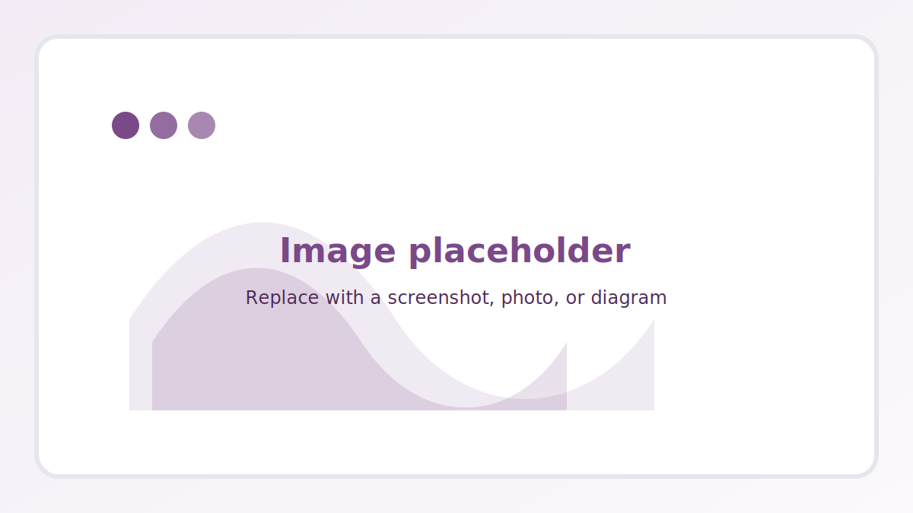

Projects / ARTH VR learning environment
ARTH VR learning environment
Summary
A Unity-based VR learning environment where learners explore an old factory and develop adaptive reuse designs for housing, supported by interaction modes and a structured user study workflow.
VR Education Unity
Overview
This project focuses on turning an adaptive reuse design task into an immersive VR experience. The environment supports exploratory learning, design iteration, and data collection for usability and engagement analysis.
My role
VR developer and researcher. Built interactions, content structure, and study-ready instrumentation for evaluation.
Tools
- Unity
- C#
- XR interaction patterns
- Quest headset deployment
Outcomes
- VR prototype that supports an adaptive reuse scenario from initial exploration to design decisions
- Reusable interaction patterns for placement, editing, and mode switching
- Foundation for usability and engagement measurement
Links
Add links to a paper, demo video, repository, or slide deck.
Talk with my AI assistant
Hold the button to record. Release to send. The reply will play aloud and appear in the chat.